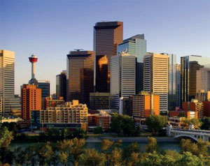

Canada is the world's second-largest country by total area, occupying most of northern North America. Extending from the Atlantic Ocean
to the Pacific Ocean and northward into the Arctic Ocean, Canada shares land borders with the United States to the northwest and south.
Comprising ten provinces and three territories, Canada is a bilingual and multicultural country, with both English and French as official
languages at the federal level. Canada is technologically advanced and industrialized nation.
High School Program
SMG provides International students with an excellent opportunity to learn about Canadian cultural and academic experience in a family
environment. All our schools provide education in a Catholic faith based environment and have varied programs to serve the needs of
students living in the community including academic, athletics, music, art, drama and others. |
|
All homestays undergo a criminal record and
child welfare check. Our program also provides kind, safe and caring homestay families, student orientation, medical insurance, school
support visits, monitoring of academics and attendance, 24 hour emergency service and guardianship.
Our Schools are Located in The Following Cities:
Saskatoon, Saskatchewan: Saskatoon is one of the best cities in Canada in which to live. (Places Rated Almanac) It is a safe, clean, beautiful
university city. It boasts the #1 education in Canada (Places Rated Almanac 97.45/100). Saskatoon Catholic
Schools won the Language Travel Magazine Star High School Award for 2006. This city located in central
Saskatchewan, Canada, on the South Saskatchewan River. Saskatoon is the most populous city in the province
of Saskatchewan. Saskatoon is often called the “City of Bridges” for its seven river crossings.
Golden Hills,, Alberta: A province of wonderful landscapes and natural beauty! We offer the splendour of the Rocky Mountains, the wide
open vistas of the prairies and, in the Badlands, the remnants of the dinosaur era.
Our smaller communities range from 10,000 in Strathmore, to 375 in Acme. Come and enjoy big city adventures
while living in small, close-knit commnities!
Nova Scotia Province: Nova Scotia is a Canadian province located on Canada's southeastern coast. It is the most populous province
in the Maritimes, and its capital, Halifax, is a major economic centre of the region. Nova Scotia is the second
smallest province in Canada, with an area of 55,284 km². Its population of 934,405 makes it the fourth least
populous province of the country, though second most densely populated.
Winnipeg, Manitoba: Winnipeg, a multicultural and vibrant city with a population of over 685,000, is situated in southern Manitoba. It is the
business and cultural centre of the province and the oldest city in western Canada. The city offers a variety of rich
and diverse cultural and sporting events, entertaiment and festivals, as well as a secure and comfortable lifestyle.
Many historical towns surround Winnipeg and are worthy of a visit.
Edmonton, Alberta: Edmonton is the capital of Alberta, a Canadian province. It is the northern most major city in North
America and is situated in the central region of the province. It is the second largest city in Alberta,
with a population of 712,391 (2005). At 684 km², the City of Edmonton covers an area larger than
Chicago, Philadelphia, Toronto or Montreal. It plays host to a year round slate of world-class festivals,
earning it the title of Festival City. It is home to North America’s largest mall and Canada’s largest
historic park. In 2004, Edmonton celebrated the centennial of its incorporation as a city.
Calgary, Alberta: Calgary is the largest city in the province of Alberta, Canada. It is located in the south of the province, in a
region of foothills and high plains, approximately 80 km east of the front ranges of the Canadian Rockies.
Calgary is the third largest civic municipality, by population, in Canada. The world famous Rocky
Mountains are only one hour away by car and offer much opportunity to ski, hike, picnic and camp. Calgary
also holds many major annual festivals which include the Calgary Stampede, the Folk Music Festival, the
Lilac Festival, One World Festival (GlobalFest), and the second largest Caribbean festival in the country
(Carifest). In 1988, Calgary became the first Canadian city to host the Olympic Winter Games.
Comox, British Columbia: Comox is a town located on the eastern side of Vancouver Island, British Columbia in the
Comox Valley. Comox has a population of approximately 12,200 people and is home to the
Canadian air force base CFB Comox and HMCS Quadra Sea Cadet training facility.
The town shares the Comox Valley with the City of Courtenay, the Village of Cumberland, and
the unincorporated settlements of Royston, Union Bay, Fanny Bay, Black Creek and Merville.
The valley’s population is currently well past the 30,000 mark, and has experienced a recent
period of sustained growth.
Mission, British Columbia: Mission is a Canadian district municipality, in the province of British Columbia and is situated on
the north bank of the Fraser River, overlooking the Fraser Valley. Mission is the twenty-third
largest municipality in British Columbia, with a population of 31,272. Mission was incorporated in
1892 and is 225.78 km² in size. Originally it was two separate incorporations, the District
Municipality of Mission and the smaller Town of Mission City; these were amalgamated by
plebiscite in 1969.
Richmond, British Columbia: Richmond is an incorporated city on the Pacific coast of the Canadian province of British
Columbia. Its neighbouring municipalities are Vancouver and Burnaby to the north, New
Westminster to the east, and Delta to the south, with Strait of Georgia on the west. Richmond is
the location of the Vancouver International Airport.
Richmond enjoys a temperate climate, and actually receives 30% less rain than neighbouring
Vancouver because it is not as close to the mountains. It rarely snows in winter and the summer
temperatures are mild to warm. Richmond is also very prone to fog in the cooler months.
Southeast Kootenay, British Columbia: The Southeast Kootenay School District is located in the Canadian Rocky Mountains in the
province of British Columbia in western Canada. It is close to world-famous Banff National Park,
one of the Canada’s top three tourist attractions. International students attend schools in the cities
of Cranbrook and Fernie.
Every year, the Southeast Kootenay School District has one of the highest graduation rates of all 60
schools districts in British Columbia, which is a good indication of the quality of our education programs.
|  |
The Academic Year Program offers international students the opportunity to spend five to ten month living
with a Canadian host family while studying at a Canadian Public school. It is a great way to enjoy the
benefits of the Canadian educational system and intensify the learning of English or French. Students stay
with a host family while attending school. All families and schools are paid in this program.
The Program offers high educational standards at different levels of difficulty, including advanced university
preparatory courses. Exchange students can graduate if they fulfill the criteria.
Requirements For All Canadian Programs:
• Passing grades in the home country
• Intermediate knowledge of English
• Return air ticket
• At least US$300.00 spending money per month
• Student must abide by rules of school and SMG
• 15 to 18.5 years old
|
|